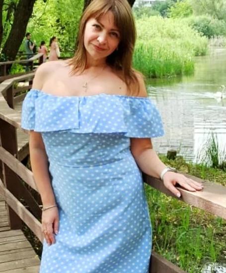
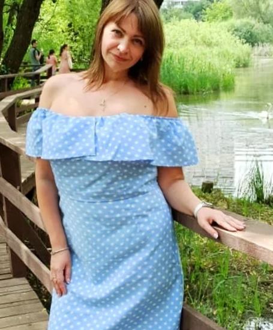

„Zhubla jsem 43 kg za 2 měsíce – teď jsem štíhlejší, než moje dcera! Koho by napadlo, že tajemství krásné postavy (bez diet a cvičení!) potkám... u sýrového pultu!”
Za 2 měsíce jsem se z vypasené baby proměnila v štíhlou kočku, které neustále všichni skládají komplimenty. Je skvělé, že nyní má takovou šanci každá žena!
„Jsem zdravá, vypadám super a cítím se o dobrých 30 let mladší... K tomu jsem se znovu vdala a našla štěstí. A já jsem si myslela, že se mi už v životě nic dobrého nestane,“ – říká Tereza Koralevská (58) z Ostrova nad Ohří.
Paní Tereza je jednou z prvních žen v Čechách, které použily metodu hubnutí zvanou „japonské tajemství štíhlé postavy“. Seznamte se s tajemstvím metody, která osvobodila paní Tereza od obezity a která může pomoci také vám.
− Mami, starej se o sebe, nadváha zkracuje život o 7 let! – to mi říkala moje dcera Olina, která žije v Itálii, pokaždé, když jsme se potkali. A podstrkovala mi pořád nové zahraniční zázrační diety, plány na cvičení na spalování tuku, čaje na hubnutí a jiné zázraky.
Já jsem to dokonce všechno ani nezkoušela. Myslela jsem si: „Co bych si já, stará baba, lámala hlavu s nadváhou? Ty nejlepší roky už jsem prožila". Zažila jsem s manželem krásné chvíle, děti jsem odchovala. – Lepší, kdyby jsi mi pořídila vnoučka, místo těch moudrostí – smála jsem se Olince.
Ale po nějaké době jsem se přestala smát, protože jsem už kvůli obezitě nemohla vyjít do schodů, když jsem se tak zadýchávala a hrozně mě bolela kolena. Začala jsem se bát, že dostanu infarkt, když půjdu domů z nákupu... A při pohledu do zrcadla jsem musela uznat, že Olina měla pravdu. Hrozně jsem sešla. Zadek jsem měla velký jak zápasník sumo. Visící faldy na břiše, špíčky a trojitá brada. Moje pokožka byla všude tak povislá, a celulitidu jsem měla nejen na zadku a stehnech, ale dokonce i na rukou!
Takhle jsem ale nevpadala vždycky. Co způsobilo, že jsem se ze štíhlé, atraktivní osoby proměnila v někoho tak obézního? Nejhůře můj vzhled ovlivnilo drama, které jsem prožila před 8 lety...
Po manželově smrti jsem přibrala 20 kg za několik měsíců
S mým Karlem jsme se setkali ještě na průmyslovce. Vyšlo to tak, že jsme oba dojížděli autobusem z Ostrova. – Jakmile jsem tě uviděl, pomyslel jsem si „Toto je moje budoucí manželka“ – smál se později Karel. Byli jsme šťastné manželství skoro 30 let. Až do jistého tragického dne, když jsme po večeři seděli u stolu.
Karel se najednou chytil za srdce, spadl a už nevstal. Záchranka přijela pozdě. Pohřbila jsem manžela v den mých 50. narozenin.
Všechny moje životní plány se zbořily jako domeček z karet. Spolu s Karlem jsme provozovali malý obchod s potravinami. Chěli jsme ještě pár let pracovat, pak jít do důchodu a postavit si malý domeček za městem. Pozemek už jsme měli koupeny. Myslet na důchod teď ani nemá smysl. Zůstala jsem sama s obchodem a musela pracovat za nás oba.

Po Karlově smrti jsem se musela o náš společný podnik postarat sama.
Bála jsem se, že to sama nezvládnu. Olina tehdy ještě studovala a bydlela se mnou. Nemohla jsem se zhroutit. Musela jsem dceři zajistit důstojný život.
Vstávala jsem ve 4 ráno a jezdila jsem Karlovým omláceným autem do práce. Navíc jsem se vždy bála řídit. Pracovala jsem celý týden, kromě neděle. Protože jsem v obchodě za sebe neměla žádnou náhradu, táhla jsem na dvě směny, od úsvitu do pozdní noci.
Nakonec se mi díky nelidské práci podařilo obchod udržet. Celé toto úsilí se odrazilo na mém vzhledu. Byla jsem tak zaměstnaná, že jsem jedla velice nepravidelně – a to totálně zpomaluje metabolismus. Kromě toho jsem každý den jedla jídlo, které mě obklopovalo (denně jsem byla schopná spolykat celou sklenici majonézy a zajíst ji velkou kostkou tvrdého sýra). A ten neustálý stesk po Karlovi, utěšování se jídlem. Také se dostavila menopauza... Po několika měsících jsem vážila o 20 kg více.
− Paní Tereza, kdo je ta tlustá bába, která tě zastupuje za pultem? Nebojíš se, že ti sežere zboží? - zeptala se jednou moje sestřenice, když jsme spolu telefonovaly.
Ukázalo se, že její přítelkyně byla v mém obchodě a nepoznala mě... Ztuhla jsem a nevěděla jsem, co říct. Rychle jsem zavěsila a pak hrozně brečela. - Kdyby zažily aspoň půlku toho, co jsem zažila já, tak by vypadaly sto krát hůř - říkala jsem si zoufalá.
 

Když se dívám na staré fotografie, nemůžu uvěřit, že jsem se až tak vykrmila...
Olinka okamžitě po ukončení studia získala práci v mezinárodní společnosti a odešla do Itálie. Často jsme hovořily po telefonu. Měla dobré místo, hezký byt. Ve firmě se seznámila s pořádným klukem, také z České republiky.
Nemohla jsem dceři udělat ostudu!
- Mami, už je to tady! Zasnoubili jsme se! Za 6 měsíců bude svatba! - řekla před rokem dcera do telefonu, štěstím bez sebe. Samozřejmě jsem měla velkou radost. Jako každá matka. Hned jsem si ale pomyslela v panice:
− Budu na hostině matka nevěsty. Jak se tam mám ukázat, taková tlustá? Jaké si obleču šaty, abych schovala ty válečky tuku? Když jsem se na sebe podívala do zrcadla, zhroutila jsem se.
Představila jsem si, jak se na mě rodina mého budoucího zetě dívá se zhnusením. Jeho matka je hezká, štíhlounká žena (viděla jsem fotografie). A já – tlustá bečka. Nemohla jsem to dovolit! Měla jsem 6 měsíců, abych se dala do pořádku.
Chtěla jsem zhubnout a jen jsem vyhodila peníze z okna
Můj boj právě začal. Nevěřila jsem, že bych mohla zhubnout po nějakých čajích nebo doplňcích stravy s reklamou na internetu. To je jako jít na slona se síťkou na motýly... Rozhodla jsem se pro přísnou dietu a cvičení s osobním trenérem. Vzala jsem kvůli tomu půjčku, protože jsem si takový výdaj nemohla dovolit.
– Co to je za flákání?! Ještě 10 opakování!!! – křičel na mě ten trenér, když jsem byla z cvičení tak zničená, že jsem sotva viděla. Točila se mi hlava a funěla jsem jako pes!
On měl sportovní, svalnatou postavu, byl mladý. Nechápal, že pro starší a obézní ženu je takové cvičení nadlidský výkon. Myslel si, že jsem líná. K tomu se na mě lidi v posilovně dívali jako na malomocnou. Jeden kluk, který přišel s dívkou, při pohledu na mě začal předstírat, že se mu udělalo špatně.
Tehdy se ve mě něco zlomilo. Přestala jsem cvičit a začala plakat jako dítě. Plakala jsem tak silně, že jsem s potížemi lapala po dechu. Trenér mě odvedl do zázemí. Tam jsem se trochu uklidnila.
Cítila jsem se trapně, že jsem udělala takové divadlo. – Klid, většina lidí se na prvním tréninku zhroutí – uklidňoval mě trenér. – Vždyť tělo je silně zatížené nadváhou, takže je jasné, že člověka všechno bolí.
Upřímně řečeno mě tato informace neuklidnila.
Nejhorší ale teprve přišlo. Od dietoložky jsem měla takový jídelníček, že jsem jedla jen nízkokalorické saláty, takže jsem byla velice slabá. Až se mi dělala tma před očima. – Ježíši, Tereza, jak to vypadáš, bledá jako zeď, nejsi nemocná? – zeptala se sousedka zaskočená pohledem na mě. Říkala jsem si: - Tak nic, zkusím to vydržet. Možná to stojí za to.
Nestálo to za to. Pořád jsem měla hlad, ten hlad mě fyzicky a psychicky ničil. Na krevních testech mi vyšlo, že jsem si uhnala anémii. Při pohledu na výsledky jsem vyprskla smíchy z celé absurdnosti té situace, protože jak můžu mít anémii, když mám nadváhu více než 40 kg? Ukázalo se, že u diet je to velice častý problém.
K tomu jsem si tím cvičením zničila kolenní kloub. A to jsem si přece najala trenéra a dietoložku právě proto, aby se postarali o mé bezpečí během hubnutí. A co? Nechala jsem se zmrzačit a ještě za to hezky zaplatila. Šílenost. Jenom dodám, že jsem nezhubla dokonce ani 1 kilogram!
Dietami a cvičením jsem si zničila organismus a zranila si koleno. Vyhodila jsem peníze z okna a nezhubla dokonce ani 1 kilogram.
Byla jsem zničená. Byla jsem přesvědčená, že již pro mě není žádná naděje. Všechno se však změnilo toho dne, když jsem ve svém obchodě potkala svou dávnou kamarádku.
Nemohla jsem uvěřit, že zhubla 60 kg!
− Paní Tereza, miláčku! – zaslechla jsem u sýrového pultu známý hlas. Byla to Hanka, kamarádka ze školní lavice, kolem které jsem se do té lavice stěží vešla, protože tehdy vážila 100 kg! Nemohla jsem uvěřit, že je to ona! Protože byla hezká, jako kdyby shodila polovinu bývalé váhy. Sršela energií a zářila radostí.
- Jak to dokázala? - hned mě napadlo. Hanka byla už od školky baculatá koule. Nadváha je u ní dědičná. Začala žít Hanka zdravěji? A nebo jenom našla lepšího trenéra a dietologa?
- Omyl! Nic z toho, zlato! Asi před rokem mi syn přinesl ze služebky v Tokiu takový skvělý zeštíhlující kapslí, díky kterému se tuk promění v energii a zmizí sám od sebe. Bez diety a cvičení. Vynalezl ho lékař, který chtěl svou ženu vysvobodit z morbidní obezity, protože se po nehodě nemohla pohnout a brala steroidy, od kterých přibírala.
− A při té příležitosti vymyslel metodu, se kterou se bezpečně hubne rychlostí 16 kg za 21 dnů. V japonsku o tom mluví všechna média. Používala jsem to skoro 3 měsíce a teď jak vidíš, jsem hezká a šťastná jako nikdy v životě! Tady to máš, napsala jsem ti, kde to můžeš sehnat - řekla a strčila mi kus papíru.
− Jen buď opatrná, lásko – dodala Hanka a podívala se mi přímo do očí – trh je nyní plný podezřelých padělků. Pouze na tomto jednom místě můžeš získat originál z Japonska.
Nemohla jsem tomu všemu uvěřit. − Hladovka a trénink mi nic nedaly a nějaký japonský kapslí mi jen tak vezme kilogramy? – Možná Hanka podstoupila operaci redukce žaludku nebo tak něco... A jenom se prostě nechtěla přiznat? - myslela jsem si plná pochybností.
Na druhou stranu, za zkoušku nic nedám, že ne? – Horší už to být nemůže – pomyslela jsem si a rozhodla se. Teď vím, že to bylo nejlepší rozhodnutí v mém životě. Myslela jsem si, že když je to takový přelomový vynález, utratím hromadu peněz. Divila jsem se, že v porovnání s dietologem a osobním trenérem – to bylo skoro zadarmo.
Kilogramy tuku mizely jak mávnutím kouzelného proutku
Prvního dne, kdy jsem použila tento japonský vynález, jsem cítila, že mám více síly, energie a optimismu. Další den, jak jsem ráno vstala – jsem byla v šoku! Pohladila jsem si břicho a cítila, že je mnohem plošší. Změřila jsem se. Výsledek? V pase jsem ztratila 4 cm! Za 1 den a 1 noc!
Chvílemi jsem cítila takové příjemné mravenčení a teplo pod kůží. Představovala jsem si tehdy, že se moje tělo proměnilo ve stroj na spalování kalorií. Byl to úžasný pocit, protože mě nabíjela energie. Bylo to tak, jak řekla Hanka – tuk v mém těle se proměňoval v energii, díky čemuž jsem se cítila stokrát lépe. Jenom dodám, že jsem necvičila a neodříkala si oblíbená jídla.
- Co je to za kouzlo? – pomyslela jsem si, když jsem si bez problému oblékla šaty, do kterých jsem se nevešla 5 let...
Hubla jsem závratnou rychlostí. Tento inovativní vynález z Japonska je zcela bezpečný, takže jsem neměla žádné vedlejší účinky. Byla jsem tak šťastná, že jsem chtěla jít do ulic a podělit se o tento fenomenální způsob hubnutí se všemi obézními lidmi, které potkám. Přece je to záchrana pro obézní!
Po 21 dnech používání pásu jsem se zvážila. Vážila jsem o 16 kg méně – přesně tak, jak říkala Hanka. Už tehdy jsem vypadala lépe. Mohla jsem se lépe obléct, no a obličej mi zeštíhlel, takže jsem zkrásněla.
Celkem jsem zhubla 43 kg za asi 2 měsíce. Ze staré vypasené ženské jsem se proměnila v štíhlou kočku, které všichni neustále skládají komplimenty. Je to úžasný pocit, který přeji každé ženě!

Jsem to opravdu já? Ještě pořád nemůžu uvěřit svému štěstí.
− Ooo, Olinko, jdeš navštívit mámu? - řekla mi jednou sousedka, když jsem odemykala dveře. Spletla si mě sousedka s mou štíhlounkou dcerou! Po vstupu do bytu jsem si až poskočila radostí.
Na svatbě dcery jsem z parketu odešla jako poslední
Cítila jsem novou energii. Úplně, jakoby ze mě společně s kilogramy zbytečného tuku někdo sejmul roky starostí. Když mě dcera před 2 týdny požádala, abych přišla do Itálie a pomohla jí s přípravou na svatbu, bez váhání jsem souhlasila.
Když mě Oli uviděla na letišti, oneměla. Doslova ji spadla čelist, jaký jsem na ní udělala dojem. Očekávala tlustou, zanedbanou babiznu. A já jsem před ní stala narovnaná, zářící a šťastná. V šatech zdůrazňujících moje nové, štíhlé tvary!
- Mami, ty vypadáš, jako bys přijela z toho televizního pořadu, kde ženy prochází vysněnou metamorfózou! A teď vážně – jak jsi to udělala? Začala jsi držet ty diety, které jsem ti posílala? – zeptala se Olina, dívajíc se na mě s obdivem.
Usmívala jsem se záhadně, uvnitř jsem ale malém praskla smíchy!
Se vším jsem dceři pomohla. Spolu jsme vybíraly šaty a zdobily sál. Také jsem upekla můj proslulý zákusek. Hosté nemohli uvěřit tomu, že jsem sama upekla dokonce 10 kusů. Maminka ženicha se na mě během zábavy diskrétně obrátila:
− Drahá, jak to děláš, že si nic neodpířáš a jsi tak štíhlá? Já si už ani nepamatuji, kdy jsem snědla normální oběd nebo něco sladkého... Nechala jsem si odsát tuk, hrozně to potom bolelo!
Ukázalo se, že se tchýně mé dcery trápí, hladová a roky podstupuje drahé a nebezpečné zákroky. Nemohla uvěřit, že normálně jím, co a kdy chci, a jsem tak štíhlá.

Tady je Olina těsně před svatebním obřadem
Všichni hosté se bavili až do rána bílého. Já jsem ale z parketu odešla poslední. Celou svatbu jsem protančila s nově potkaným Filipem – ženichovým strýcem.
- Mohl jsem na tobě oči nechat. Vynikla jsi mezi všemi ženami na zábavě. Tvůj zářivý úsměv mě ohromil. Zářila jsi jako hvězda! - vyznal později.
Štěstí lze najít v každém věku
Filip o mě začal usilovat, ale nejdřív jsem ho odmítla. - K čemu mi to bude? Se vším si poradím sama - říkala jsem si. Jenže Filip byl vytrvalý. K výročí našeho seznámení se u mě doma objevil s prstýnkem.- Chceš být slunce mého života do konce, moje hvězdo? – zeptal se na kolenou v předsíni. Úplně jsem ztratila řeč. Nakonec jsem ale zvládla říct jediné slovo - Ano.

Společně vzhlížíme do budoucna s optimismem
Napadlo mě, že kdybych ten den neposlechla Hanka v obchodě a nezkusila tobolky na hubnutí, přišla bych o tak skvělou šanci na štěstí... Protože štěstí k nám může přijít v každém věku. Stačí mu jen otevřít, když zazvoní do našich dveří.
S Paní Tereza mluvila Anna Pacholská.
Drahé Čtenářky! Pás redukující tukovou tkáň, který využila paní Tereza, je odnedávna dostupný také v Česku. Naše čtenářky čeká speciální nabídka - díky které lze získat kúru s finančním příspěvkem levněji. Chcete-li nabídku využit, stačí kliknout níže uvedený odkaz: